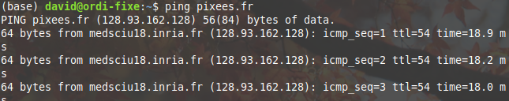

Module Internet (II)
Serveur DNS
Voici un exemple d'adresse web :
``` https://pixees.fr/informatiquelycee/sec/index.html ````
Cette adresse peut-être décomposée en quatre parties :
- la partie "https" (HyperText Transfert Protocol) a été étudiée dans le module web
- "pixees.fr" est la partie qui va nous intéresser ici, "fr" est une extension du nom de domaine et "pixees" est un nom de domaine
- la partie "informatiquelycee/sec/index.html" désigne l'emplacement de la page HTML "index.html" (déjà étudié dans le module Web)
Sans trop rentrer dans les détails, "pixees.fr" désigne une machine sur un réseau.
Étrange...jusqu'à présent nous avons vu que c'est une adresse IP qui permet de reconnaitre une machine sur un réseau, pas une combinaison du genre "a.b" avec a un nom de domaine et b une extension du nom de domaine (cette combinaison est appelée "adresse symbolique") comme dans "pixees.fr".
Rassurez-vous, en fin de compte, c'est bien une adresse IP qui permet d'identifier une machine sur un réseau, mais étant donné que pour un humain il est beaucoup plus facile de retenir "pixees.fr" que de retenir l'adresse IP 128.93.162.128, un service dénommé DNS (Domain Name Server) permet de traduire les adresses IP (exemple "128.93.162.128") en adresse symbolique (exemple "pixees.fr") et vice versa.
Activité 14.1
Dans la barre d'adresse de votre navigateur, tapez "http://128.93.162.128/informatiquelycee/sec/index.html".
Comme vous pouvez le constater, cela fonctionne parfaitement, adresse IP ou adresse symbolique : même résultat !
Activité 14.2
Sur votre ordinateur, ouvrez un terminale (si vous ne savez pas comment faire, demandez de l'aide à votre enseignant). Dans le terminale, nous allons faire un "ping", comme nous avons appris à le faire avec le simulateur Filius, mais au lieu de taper : ping "une adresse IP", vous allez taper : "ping pixees.fr"
Vous devriez alors voir quelque chose qui ressemble à ceci :

Comme vous pouvez le constater, l'adresse IP de la machine "pixees.fr" est bien 128.93.162.128
Pour certaines adresses publiques, Il est possible d'effectuer ce genre de traduction sur un site web : https://www.whatsmyip.org/whois-dns-lookup/
Activité 14.3
Utilisez le site https://www.whatsmyip.org/whois-dns-lookup/ afin d'obtenir l'adresse IP du serveur "pixees.fr" (dans la partie "DNS Record Lookup")
Activité 14.4
Utilisez le site https://www.whatsmyip.org/whois-dns-lookup/ afin de recueillir des informations sur la machine "pixees.fr" (dans la partie "WHOIS Lookup")
Comme vous pouvez le constater, le site whois-dns-lookup fournit énormément d'informations
Toutes ces informations peuvent être utilisées par exemple pour vérifier l'origine d'un site (en cas de doute sur les contenus d'un site,...)